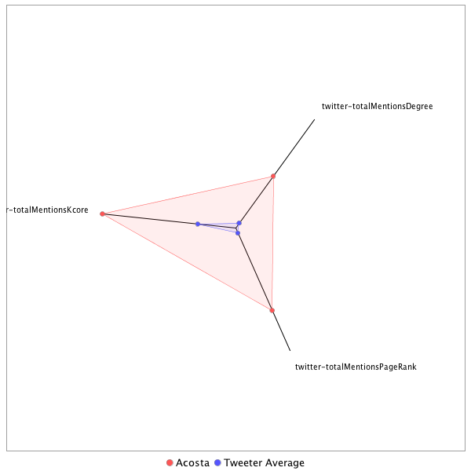

This tweeter has been identified as a super spreader. Its target audience and hashtag and word usage are analyzed below.
Basic Statistics
Number of direct followers 290731 The peak number of followers that the tweeter had during any time period. Number of retweeters 278 Number of agents that retweeted the key influencer. Number of secondary followers 33841188 The sum of the followers of those who retweeted the key influencer.
Measure Values of Super Spreaders node versus Tweeter Average
This compares the measure values of the key influencer with the average values across all tweeters. For each measure line, the center-point means zero and the end-point means the maximum score across all tweeters.

Where was the influencer?
The agent was in 1 different locations.
The agent and retweeters were in 67 different locations.

What hashtags did the influencer use?
This displays the top ranked hashtags that the influencer and its retweeters used.
Rank hashtag Count 1 AHCA 842 2 Comey 721 3 Russia 641 4 pharma 596 5 BREAKING 523 6 Trump 474 7 TrumpCare 452 8 Obamacare 445 9 ComeyHearing 395 10 FDA 395 11 biotech 383 12 mtal 383 13 ParisAgreement 379 14 CNNsotu 363 15 GA06 361 16 ACA 352 17 TheLead 311 18 SCOTUS 287 19 MemorialDayWeekend 249 20 NIH 235 21 ISIS 230 22 Manchester 221 23 adopt 220 24 ge2017 207 25 VAGov 200 26 Syria 187 27 Iran 181 28 drugprices 176 29 trumprussia 172 30 AdoptDontShop 170 31 dog 169 32 healthcare 169 33 Qatar 157 34 ComeyDay 155 35 JamesComey 148 36 ComeyFiring 141 37 covfefe 139 38 ForTheRecord 134 39 climatechange 130 40 ComeyTestimony 129 41 LondonBridge 124 42 MemorialDay 123 43 worldreligiontour 123 44 TrumpBudget 120 45 NAFTA 115 46 sallyyates 113 47 ParisAccord 111 48 potusabroad 109 49 cat 103 50 CongressionalBaseballGame 100 51 FF 99 52 Nats 98 53 NYC 97 54 China 96 55 SessionsHearing 96 56 NorthKorea 95 57 ThisIsGoingWell 95 58 cbntrumptravels 95 59 CDC 93 60 Israel 93 61 climate 90 62 DonaldTrump 88 63 Medicaid 88 64 drugpricing 88 65 rescue 88 66 fakenews 86 67 Opioids 81 68 ksleg 80 69 foster 79 70 omnibus 79 71 txlege 79 72 FBI 78 73 Venezuela 78 74 RiyadhSummit 77 75 NATO 76 76 travelban 76 77 Afghanistan 75 78 US 75 79 MTpol 73 80 CR 71 81 MOLeg 71 82 TheBachelorette 71 83 SaudiArabia 70 84 FBIDirector 69 85 science 69 86 CNN 68 87 Turkey 68 88 Hardball 66 89 ManchesterBombing 66 90 ThisWeek 66 91 London 63 92 CATS 59 93 FOIA 58 94 snl 58 95 TBT 57 96 DPRK 56 97 MAGA 56 98 42faith 55 99 GrenfellTower 55 100 opioid 55
Tweet List
This displays all of the tweets of the influencer ordered from earliest to latest. Click on a tweet to see its status in Twitter.
Number Tweet ID Date Message 1 859443853409079298 2017-05-02 12:25:57-04 Scoop: Former Texas Senator Kay Bailey Hutchison is leading contender to become U.S. Ambassador to NATO. 2 859090374320697345 2017-05-01 13:01:21-04 Our @kevinliptakcnn has learned WH ending Michelle Obama girls education program "Let Girls Learn." 3 860161299510173696 2017-05-04 11:56:49-04 Trump addresses health care: "Hopefully we're going to have a wonderful day and a wonderful vote." 4 861662323072798720 2017-05-08 15:21:21-04 Yates on her warning to WH on Flynn: "The National Security Adviser, essentially, could be blackmailed by the Russians." 5 862066755908370433 2017-05-09 18:08:25-04 Trump letter to Comey thanks him for saying POTUS not under investigation https://t.co/O9Ypiy4aZg 6 862844152647745536 2017-05-11 21:37:31-04 Spicer briefing tomorrow per WH https://t.co/3q4QqCDpe1 7 862384512084443136 2017-05-10 15:11:04-04 WH sources: Highest levels incl. POTUS evaluating Sanders subbing for Spicer in briefing room. Last night an "embarrassment.. disaster." 8 861663545926266880 2017-05-08 15:26:12-04 Fmr. Trump transition official, when asked how much vetting was done on Flynn during transition, described it in one word: "none." 9 861598993482174467 2017-05-08 11:09:42-04 Obama warned Trump about hiring Flynn in their Oval Office meeting on Nov. 10, we have learned 10 859477284406906880 2017-05-02 14:38:47-04 POTUS Putin call has happened. Readout to come shortly, official says. 11 862675281634635776 2017-05-11 10:26:29-04 More here.... White House furious after being trolled with Russia Oval Office photos https://t.co/G9J4S2amsW 12 862641882983215105 2017-05-11 08:13:46-04 WH furious over Russian government photos of Trump meeting with Lavrov/Kislyak. "They tricked us," an official said of Russians "They lie." 13 863007984472993792 2017-05-12 08:28:32-04 When does the space ship back to Earth One depart? 14 859405735775674369 2017-05-02 09:54:29-04 ♂️ https://t.co/nKK9WKwSTw 15 863003960994656256 2017-05-12 08:12:32-04 Or we could have a POTUS news conference https://t.co/mINE7vb5l3 16 862060672737300482 2017-05-09 17:44:15-04 WH: FBI director James Comey has been fired https://t.co/uGwG5e0Jk2 17 859085240257662978 2017-05-01 12:40:56-04 Trump on Kim Jong Un to Bloomberg: “If it would be appropriate for me to meet with him I would absolutely. I would be honored to do it" 18 863017657293041664 2017-05-12 09:06:58-04 Fairly certain we've laid to rest the argument that we should not report the president's tweets. 19 860158560147300352 2017-05-04 11:45:56-04 In Rose Garden, Trump soaks in moment with religious conservatives: "It was looking like you'd never get here folks but you got here." 20 863088860355600384 2017-05-12 13:49:54-04 Spicer: "nothing further" on whether there's a recording device in Oval or WH residence. 21 862448786022518784 2017-05-10 19:26:28-04 WH: POTUS to welcome President Recep Tayyip Erdogan of Turkey to WH next Tuesday 22 861554373582782466 2017-05-08 08:12:24-04 Darkness dies in democracy... https://t.co/CpX3pmPpiN 23 862642456030052352 2017-05-11 08:16:03-04 WH did not anticipate Trump/Lavrov/Kislyak photos would be posted by TASS, official said. https://t.co/HdWYNDTTxU 24 863531597580185600 2017-05-13 19:09:11-04 The Obama WH did not secretly record meetings, I'm told. https://t.co/dzcuYWdU1H 25 863531234529607684 2017-05-13 19:07:44-04 Fmr Obama WH official: "We obviously didn’t record private meetings. The Obama White House didn’t secretly record private meetings." 26 863226268770291712 2017-05-12 22:55:55-04 RT @WashWizards: JOHN. WALL. DAGGER. #WizCeltics #DCFamily https://t.co/i2j3v7ZYz0 27 863054971335561217 2017-05-12 11:35:14-04 WH releases letter from Trump attorney detailing income from Russian sources https://t.co/j2cLCBXdpj 28 863007704264183810 2017-05-12 08:27:25-04 The Trump tapes? https://t.co/ztCKbRBEgk 29 863006516961345537 2017-05-12 08:22:42-04 Perfect accuracy it was not https://t.co/X3ubAimzPP 30 862741917494374401 2017-05-11 14:51:16-04 RT @maggieNYT: "Really?" asks @shearm of Sarah Huckabee when she insists she's spoken to "countless" people about morale at FBI. 31 862666350602407937 2017-05-11 09:51:00-04 RT @Sarah_Swinehart: @Acosta Many state-run news agencies double as "officials" & if a foreign photog is there, expectation should be that… 32 862659043164377088 2017-05-11 09:21:57-04 @AndrewBeatty A WH official said Putin asked Trump to meet with Lavrov and the president agreed. 33 862642777691226113 2017-05-11 08:17:19-04 Official pushed back on critics who slammed Kislyak in Oval: “It is ridiculous to say that an ambassador can’t meet with the president.." https://t.co/HWgoK9vVUE 34 862449790977794049 2017-05-10 19:30:28-04 RT @stevebruskCNN: Just in: Senate Intelligence Committee has subpoenaed former national security advisor Michael Flynn in the Russia inves… 35 862428762964717568 2017-05-10 18:06:54-04 RT @DylanByers: NEW @CNN: Speculation mounts over Sean Spicer’s future: https://t.co/pXvFCoiHv3 from me & @Acosta. https://t.co/yGZSvkWuUb 36 862372521152303104 2017-05-10 14:23:25-04 Sanders said Trump's doubts about Comey date back to election. But just days before election Trump was praising Comey. https://t.co/aJ9pewdeOj 37 862371422349524995 2017-05-10 14:19:03-04 RT @Jordanfabian: Sanders ends briefing after 29 minutes. 38 862369573718425604 2017-05-10 14:11:43-04 SHS says POTUS had been considering firing Comey since inaugural... but also wanted to give him a chance. 39 862368571669843969 2017-05-10 14:07:44-04 RT @TeddyDavisCNN: Sara Huckabee Sanders says Trump lost confidence in Comey over several mos, from day he took office, calling it “an eros… 40 862359978547576836 2017-05-10 13:33:35-04 RT @Variety: Vladimir Putin, in hockey gear, reacts to James Comey firing https://t.co/4FU3VUAPyU https://t.co/lQhzXcjleG 41 862329455104204801 2017-05-10 11:32:18-04 POTUS on Comey firing to reporters in pool: "Because he was not doing a good job." 42 862289271255904257 2017-05-10 08:52:37-04 RT @ShimonPro: We have spent days working on this. As we were going to air with it we learned Comey had been fired. https://t.co/kKdIvEn40r 43 862149961957429248 2017-05-09 23:39:03-04 Kimmel tonight: "Sort of like OJ firing Judge Ito half-way through the trial." https://t.co/ZCUDrTx0jq 44 862134038362021889 2017-05-09 22:35:47-04 WH confirms Trump scheduled to meet with Lavrov in the Oval Office tomorrow morning https://t.co/VSmLUomps5 45 862111010630643712 2017-05-09 21:04:16-04 RT @wpjenna: Less than two hours ago, White House said they would have nothing more to say tonight. Conway, Sanders and Spicer were then ru… 46 862102661528768512 2017-05-09 20:31:06-04 RT @Phil_Mattingly: .@SenJohnMcCain renews call for select committee: "I am disappointed in the President's decision to remove James Comey… 47 862102373606490113 2017-05-09 20:29:57-04 President Trump may meet with Russian Foreign Minister Lavrov tomorrow, we have confirmed. Lavrov already scheduled to meet with Tillerson. 48 862100054462648320 2017-05-09 20:20:44-04 A diehard Trump loyalist tells me: "I firmly believe the Russia angle is fake news. But this gives me pause." 49 862092968827727873 2017-05-09 19:52:35-04 Burr: “I am troubled by the timing and reasoning of Director Comey’s termination." https://t.co/c9KIDXn0FM 50 862084578483351552 2017-05-09 19:19:14-04 Schiller was delivering Trump letter firing Comey, WH tells our @Kevinliptakcnn https://t.co/tJTf2zr2Ch 51 862075439212355584 2017-05-09 18:42:55-04 RT @PhilipRucker: Keith Schiller is Trump's longtime bodyguard and head of security, now director of Oval Office operations https://t.co/1Y… 52 862068782776320000 2017-05-09 18:16:28-04 CNN has obtained images of top Trump aide Keith Schiller leaving FBI HQ earlier this afternoon https://t.co/nmw467IbYu 53 862027909485211649 2017-05-09 15:34:03-04 RT @PhilipRucker: Spicer answers almost every question about Russia-Flynn by calling Sally Yates an “Obama appointee” and “political oppone… 54 861996559336124416 2017-05-09 13:29:29-04 RT @ElizLanders: NEW: sr White House official tells me they are adding women to the 13- person, all-male working group in Senate on healthc… 55 861954804968501251 2017-05-09 10:43:34-04 RT @Kevinliptakcnn: Delay caused by a scheduling conflict, per WH. Trump aiming to decide by the G7 in a couple weeks. https://t.co/5JfokCF… 56 861682607100133377 2017-05-08 16:41:57-04 Clapper QOTD: "Unclassified is not leaking." 57 861678580262203394 2017-05-08 16:25:57-04 RT @CeciliaVega: Minutes after we asked the WH why the President's campaign website still calls for a Muslim ban, it appears the statement… 58 861667729429979136 2017-05-08 15:42:50-04 Feinstein: Flynn "lied?" Yates: "That's certainly how it appeared... yes." 59 861662802699837440 2017-05-08 15:23:15-04 RT @abbydphillip: Flynn was interviewed by the FBI at the White House, per Yates. 60 861662402571632640 2017-05-08 15:21:40-04 RT @ZekeJMiller: Yates said on Jan 27 (2nd meeting) McGahn asked about applicability of criminal statutes to Flynn 61 861631762937630726 2017-05-08 13:19:55-04 Spicer describes situation between Obama and Flynn as "bad blood..." asks why Obama admin didn't do something about Flynn sec. clearance. 62 861631443478491138 2017-05-08 13:18:39-04 Spicer: Obama made it known "he wasn't exactly a fan of General Flynn." 63 861631006222282753 2017-05-08 13:16:54-04 RT @ShaneGoldmacher: Spicer says Trump spoke with Macron this morning 64 861630683026006017 2017-05-08 13:15:37-04 Spicer: WH to release next batch of judicial nominees later today 65 861624828519960576 2017-05-08 12:52:21-04 RT @betsy_klein: Sen. Cassidy is on @JimmyKimmelLive tonight https://t.co/3pV5VoINey 66 861059531941576704 2017-05-06 23:26:04-04 @edlavaCNN thanks Ed! 67 860484524995694592 2017-05-05 09:21:12-04 Insurance company ceos making big bank as they pull out of Obamacare https://t.co/fSXbfokW81 68 860484216357826560 2017-05-05 09:19:58-04 Insurance companies pulling out of markets... but their ceos make big $$$ https://t.co/uv06CJzafk 69 860483861838532608 2017-05-05 09:18:34-04 Insurance companies pulling out of markets. But look how much their ceos make... https://t.co/dyiuVBFAGy 70 860322312905785344 2017-05-04 22:36:38-04 Never goes out of style https://t.co/FG6kQ1MWpz 71 860277443202097158 2017-05-04 19:38:20-04 Trump, during pool spray with Australian PM, acknowledges health care bill "could change a little bit" in senate. 72 860256986054656000 2017-05-04 18:17:02-04 RT @mj_lee: Wolf: Did you read the health care bill? Chris Collins: "I will fully admit, Wolf, I did not." @CNN 73 860250823217041408 2017-05-04 17:52:33-04 @marincogan @tinyappleslice yes guilty as charged...thanks so much. 74 860248808432820225 2017-05-04 17:44:33-04 Tried to ask POTUS about preexisting conditions at end of Rose Garden event. He didn't respond. 75 860216364069511168 2017-05-04 15:35:37-04 Scalise, McCarthy and others spending a lot of time talking about pre-existing conditions.. a prebuttal to CBO score and criticism to come 76 860212589263015937 2017-05-04 15:20:37-04 POTUS in Rose Garden: "We're going to get this passed through the senate." 77 860212292818001920 2017-05-04 15:19:27-04 RT @PhilipRucker: "Welcome to the beginning of the end of Obamacare," VP Pence says, opening victory rally in Rose Garden. 78 860210666216534017 2017-05-04 15:12:59-04 POTUS victory lap attracting not only House GOP members but Trump family too. Daughter Ivanka and Jared Kushner here as well 79 860207320076341248 2017-05-04 14:59:41-04 We just spotted Ryan entering Oval, shaking hands with some in room incl Bannon, big smiles. 80 860202673919983616 2017-05-04 14:41:13-04 POTUS remarks on health care at 3:30pm in Rose Garden, WH says. 81 860201889006276614 2017-05-04 14:38:06-04 Senior GOP source says POTUS and Ryan were in touch nearly every day over the last month during health care process 82 860197187459977216 2017-05-04 14:19:25-04 Cummings waving goodbye to GOP after House bill passes. 83 860197085559361543 2017-05-04 14:19:01-04 Were some Dems singing "Hey hey goodbye???" 84 860196718243196929 2017-05-04 14:17:33-04 House has 216 votes to repeal Obamacare 85 860194411556347904 2017-05-04 14:08:24-04 Boom there it is https://t.co/AluP10sRGi 86 860191204251758592 2017-05-04 13:55:39-04 WH bracing for a health care squeaker. Could pass by just 2-3 votes, one official said. 87 860190293357989888 2017-05-04 13:52:02-04 RT @benyc: Republicans get to their feet to applaud Ryan as he finishes speech. Now chanting "Vote!" Democrats shouting "Where's the scor… 88 860188167055572994 2017-05-04 13:43:35-04 POTUS is watching https://t.co/MFduHHVMG1 89 860184844185341952 2017-05-04 13:30:22-04 RT @GlennThrush: .@SarahHuckabee : House doesn't need to wait for a CBO score on healthcare because 'it's impossible to score' the bill-too… 90 860160781920464897 2017-05-04 11:54:46-04 POTUS tells Little Sisters of the Poor, in their fight against contraception requirement In Obamacare, their "long ordeal" will be over https://t.co/SxLJ71zibK 91 860157765699985408 2017-05-04 11:42:46-04 POTUS at religious freedom event: "1We will not allow people of faith targeted." https://t.co/Z4G10C1QpV 92 860157365622112256 2017-05-04 11:41:11-04 Michele Bachmann at Religious Liberty EO event in Rose Garden https://t.co/CjuBFe3SvP 93 860156776649551873 2017-05-04 11:38:51-04 RT @peterbakernyt: Trump’s 1st foreign trip hits centers of three major religions. “Tolerance is the cornerstone of peace” he plans to say… 94 860156036602355713 2017-05-04 11:35:54-04 RT @KellyO: Prayers offered by leaders of different faiths in Rose Garden before @realDonaldTrump signing of executive order. https://t.co/… 95 860152605674262529 2017-05-04 11:22:16-04 Current GOP health care proposal still expected to receive CBO score, per source close to process 96 860145123048534016 2017-05-04 10:52:32-04 POTUS expected to visit Vatican, Israel and Saudi Arabia on upcoming foreign trip, CNN has confirmed. 97 860095510019010560 2017-05-04 07:35:24-04 During the exchange Spicer said Trumpcare is "strengthening" protections for people with pre-existing conditions. https://t.co/lm5OURKiWB 98 860094558805393410 2017-05-04 07:31:37-04 Here's my exchange with Spicer yesterday on pre-existing conditions https://t.co/RZkSBXOQGJ 99 859953331657224193 2017-05-03 22:10:26-04 https://t.co/xuJxxgj2vG 100 859918394610647041 2017-05-03 19:51:36-04 Don't have time for gifs... dude. https://t.co/GY7uU50jLI 101 859918040036765698 2017-05-03 19:50:11-04 Grab the popcorn... https://t.co/7iNGwUjV8s 102 859917464758562817 2017-05-03 19:47:54-04 A GOP source close to process says they are having a vote.. not that they have the votes. No guarantees this will pass, source cautions. 103 859917213926608896 2017-05-03 19:46:54-04 WH describing House GOP optimism on health care as a "positive development." 104 859916474718277633 2017-05-03 19:43:58-04 RT @mj_lee: McCarthy to probing reporters on health care vote: "We're gonna pass it! We're gonna pass it! Let's be optimistic about life!"" 105 859911569614000128 2017-05-03 19:24:29-04 RT @cnnbrk: House GOP leaders schedule a Thursday vote to repeal and replace Obamacare. GOP leader says 'we have enough votes' https://t.co… 106 859845987665313792 2017-05-03 15:03:53-04 RT @Phil_Mattingly: .@Acosta: "Everybody who has a pre-existing condition under TrumpCare is going to be fine?" @PressSec: "Yes." 107 859845889803919360 2017-05-03 15:03:29-04 @MatthewNussbaum hey thanks 108 859839138874499072 2017-05-03 14:36:40-04 RT @SmithInAmerica: Spicer: "It's somewhat sad that we're still debating why the president won." 109 859837736144052236 2017-05-03 14:31:05-04 Spicer on Comey: "The president has confidence in the Director." 110 859820007940923393 2017-05-03 13:20:39-04 RT @kaitlancollins: Trump on peace in the Middle East: "It's something that I think is, frankly, maybe not as difficult as people have thou… 111 859819676611883010 2017-05-03 13:19:20-04 Comey to Sen. Whitehouse on POTUS tweet about giving Clinton a free pass: "That was not my intention." 112 859521872597323776 2017-05-02 17:35:58-04 RT @ElizLanders: Tweet from @RabbiShmuley of the whiteboard in Steve Bannon's office of administration accomplishments- I underlined this b… 113 859492260345511936 2017-05-02 15:38:18-04 Regarding pic of fencing Mulvaney showed during briefing, a WH official says photo was taken along border in Sunland Park, NM 114 859489943999188992 2017-05-02 15:29:05-04 In other news... Sebastian Gorka was outside West Wing today talking to reporters (including this reporter) insisting he isn't leaving WH. 115 859481591780913153 2017-05-02 14:55:54-04 WH:POTUS/Putin-agreed that the suffering in Syria has gone on for far too long and that all parties must do all they can to end the violence 116 859478405976293380 2017-05-02 14:43:14-04 RT @Sarah_Boxer: Reporters "are scratching their heads & wondering 'What the hell is going on?' But that is not a new question at this WH"… 117 859476398876098562 2017-05-02 14:35:16-04 RT @mviser: “There are a good number of reporters wondering what the hell is going on.” — @Acosta, live from the White House after Sean Spi… 118 859474494330720258 2017-05-02 14:27:42-04 Spicer left briefing with Mulvaney and did not come back. So briefing over. 119 859469465989369857 2017-05-02 14:07:43-04 Mulvaney putting best face on no wall funding, saying new border security money will beef up existing fencing. 120 859463684090941447 2017-05-02 13:44:45-04 DHS Sec Kelly makes appearance in briefing room https://t.co/AqVMTSXhQz 121 859452780507004929 2017-05-02 13:01:25-04 Move to tap Hutchison is part of "uptick" in process to fill undersecretary and ambassador positions within State Dept, I'm told. https://t.co/4YrCTbDWTZ 122 859176643612610561 2017-05-01 18:44:09-04 Admin official now telling us no change to program https://t.co/iHEjcguCCW 123 859113160032366592 2017-05-01 14:31:53-04 RT @gelles: Spicer: "Clearly he stands by that" Trump to CBS: "I don't standyby anything" 124 859110659400892417 2017-05-01 14:21:57-04 RT @anniekarni: Spicer: "the conditions are not there right now." https://t.co/pmOrvhm7C8 125 859110254080122884 2017-05-01 14:20:20-04 RT @CNNPolitics: Sean Spicer says Trump would meet with Kim Jong Un under the right circumstances, but right now they are not there https:… 126 859108706683936769 2017-05-01 14:14:11-04 Spicer asked about Gorka: "I have no belief that he is currently leaving the WH at this time." 127 859100052802985984 2017-05-01 13:39:48-04 RT @Jordanfabian: Trump on Duterte: “You know he’s very popular in the Philippines ... He has a very high approval rating" https://t.co/8SH… 128 859092480217796609 2017-05-01 13:09:43-04 Trump and Ryan spoke this weekend, I'm told. 129 859080039169740803 2017-05-01 12:20:16-04 Spotted leaving WH, former UN Amb John Bolton https://t.co/qYRPtsijrE 130 859054346675290112 2017-05-01 10:38:11-04 RT @peterbakernyt: Duterte, the controversial Philippine leader, may blow off Trump's invitation to the White House after all. https://t.c… 131 864643267325026304 2017-05-16 20:46:33-04 Corey Lewandowski in the house at WH tonight... we hear. 132 864256530421612545 2017-05-15 19:09:48-04 McMaster did not take questions https://t.co/sqPeDb27S4 133 864250101862211585 2017-05-15 18:44:15-04 WH hastily calling reporters to stake out position. McMaster expected to talk to reporters about Wash Post code word story 134 864684154872627200 2017-05-16 23:29:02-04 One portion of NYT story that WH has not commented on/denied is part where Trump asked Comey to lock up reporters. I asked. No response. 135 864247489263751168 2017-05-15 18:33:53-04 Dina Powell statement provided by WH: "This story is false. The president only discussed the common threats that both countries faced." 136 864545714394857472 2017-05-16 14:18:55-04 Spicer to @OKnox - Western Wall "clearly in Jerusalem." 137 864489419780354048 2017-05-16 10:35:13-04 WH changes schedule. McMaster to brief solo at 11:30. Spicer goes off cam later https://t.co/Ymd2RmsiZP 138 864595195039555584 2017-05-16 17:35:32-04 WH statement on NYT story that Trump asked Comey to drop Flynn investigation https://t.co/QDR4LVnK2N 139 864180016329969664 2017-05-15 14:05:46-04 POTUS moments ago in Oval Office said FBI director selection process "moving rapidly." 140 864620312289312768 2017-05-16 19:15:20-04 One week in Trump world: Trump fired FBI Director. Shares classified info with Russians. Comey memo reveals Trump asked to drop Flynn probe 141 864847500036976642 2017-05-17 10:18:06-04 RT @scottwongDC: Someone shouts if Ryan still has full confidence in Trump. "I do" he replied 142 864846780579688450 2017-05-17 10:15:15-04 RT @DaniellaMicaela: Paul Ryan: "Obvious" some people want to "hurt" Trump https://t.co/1vAfe6SS3e 143 864824104347725824 2017-05-17 08:45:08-04 White House official says Comey's reported recollection of that part of the conversation with Trump is also inaccurate. https://t.co/Oko1ZdAeUD 144 864656362487394304 2017-05-16 21:38:36-04 RT @TheBrodyFile: .@TheBrodyFile EXCLUSIVE: Ambassador @nikkihaley Says Western Wall Is Part Of Israel. https://t.co/J36srt215l https://t.c… 145 864652716919967744 2017-05-16 21:24:06-04 Source close to WH says DC outrage directed at the president over Comey memo may be useful with his supporters: "Only helps us." 146 864645850785611776 2017-05-16 20:56:49-04 RT @alivitali: https://t.co/OJt4TA0iQV 147 864628942266929152 2017-05-16 19:49:38-04 Ryan spox: "We need to have all the facts, and it is appropriate for the House Oversight Committee to request this memo." 148 864628175350923265 2017-05-16 19:46:35-04 RT @DavidNakamura: Some good news to end another long day at the WH: a marriage proposal outside the West Wing. https://t.co/Kqf5NlQoKu 149 864619228770557952 2017-05-16 19:11:02-04 Senior WH official on Comey memo: Conversation "of that nature" did not happen https://t.co/KflxqCeu4t 150 864608167040253953 2017-05-16 18:27:05-04 Cummings calls Comey memo "smoking gun" on @CNNSitRoom 151 864607981673074688 2017-05-16 18:26:21-04 RT @nytmike: NEWS: Trump told Comey to stand down on Flynn investigation, 1st evidence Trump tried to influence Russia inquiry https://t.co… 152 864605385109491712 2017-05-16 18:16:02-04 Schumer on Senate floor: "history is watching." 153 864604628998082564 2017-05-16 18:13:01-04 WH points to video of McCabe testifying investigation not impeded. Unclear if Comey relayed concerns to McCabe. https://t.co/zoogQ3VQV3 154 864602344494858240 2017-05-16 18:03:57-04 Schiff: Comey memo shows president may have engaged in "interference or obstruction of the investigation.." 155 864580286444711940 2017-05-16 16:36:18-04 USSS says jumper only made it over bike rack barricade. Not the fence https://t.co/DqCGv8Uipn 156 864577154423697408 2017-05-16 16:23:51-04 USSS moving press off WH North Lawn. https://t.co/MoZZ1BkGJR 157 864573423456051200 2017-05-16 16:09:01-04 Pompeo expected to field questions on Trump Russia meeting from House Intel Cmte members this evening, I'm told 158 864559725735813120 2017-05-16 15:14:36-04 RT @ShimonPro: "Reince, Bannon, Spicer and Dubke need to go. Staff desperate for Trump 2.0.," source to @Acosta 159 864549612991991811 2017-05-16 14:34:24-04 Spicer saying US has shared interests with Russia on ISIS and other matters. Hard to argue US is partnering with Russia on anything. 160 864547375968391168 2017-05-16 14:25:31-04 RT @JenniferJJacobs: Is White House in "downward spiral"? Spicer: President's committed to agenda, proud of work he's done, but leaks are "… 161 864545358231351297 2017-05-16 14:17:30-04 RT @abbydphillip: "The president wasn't aware" is now an official WH talking point, per Spicer. An extraordinary thing to say abt the comma… 162 864543810294079488 2017-05-16 14:11:21-04 RT @MajorCBS: Well now @kimguilfoyle in @mercnews says now might be time for @PressSec to take five - and she may take over https://t.co/54… 163 864521212596297729 2017-05-16 12:41:33-04 POTUS greets Erdogan at WH https://t.co/dlJcvBp13X 164 864513341364031490 2017-05-16 12:10:17-04 McMaster briefing appeared to be cut short after press aide entered room with note. https://t.co/AGz7d7SFBE 165 864509161060663298 2017-05-16 11:53:40-04 McMaster says POTUS to meet with newly elected French president Macron in Brussels next week. 166 864317299720933376 2017-05-15 23:11:17-04 WH confirms Trump will file a personal financial disclosure form "in a short period of time." 167 864264132664717312 2017-05-15 19:40:01-04 Sarah H. Sanders told reporters she didn't know anything about yelling. https://t.co/1CNSSomWKY 168 864262992631918594 2017-05-15 19:35:29-04 Sarah H. Sanders just addressed reporters in Upper Press advising there would be no further statements tonight. 169 864257582990536704 2017-05-15 19:13:59-04 Several reporters asked if there is a recording of the meeting. No response. https://t.co/2m63DABQgl 170 864256415036305408 2017-05-15 19:09:21-04 McMaster tells reporters outside West Wing that Wash Post story is "false... I was in the room. It didn't happen." https://t.co/g1tSzWfYIC 171 864252774695018496 2017-05-15 18:54:53-04 WH also put out statements from Tillerson and McMaster. But only Powell says story is wrong https://t.co/9lEAWNuW77 172 864241075564802049 2017-05-15 18:08:23-04 RT @JDiamond1: When HR McMaster accidentally strolls by reporters huddled outside Spicer's office: "This is the last place in the world I w… 173 864197644385701888 2017-05-15 15:15:49-04 Yes...it's the question of the day... "Where are the tapes?" https://t.co/JUAPB0mKC8 174 864192281443803136 2017-05-15 14:54:30-04 RT @BennettJohnT: .@Acosta as Spicer exits: "Where are the 'tapes,' Sean?! 175 864187332488032258 2017-05-15 14:34:50-04 Spicer: "no need for a special prosecutor." 176 864183644642004995 2017-05-15 14:20:11-04 RT @JenniferJJacobs: White House's Bossert says as of now no US federal systems affected by ransomware. But it reached 150 countries, 350k… 177 864183127559868418 2017-05-15 14:18:08-04 WH Counterterrorism adviser Tom Bossert briefing reporters on ransomware attack. 150 countries affected so far, he says. 178 866381943054766080 2017-05-21 15:55:26-04 At a briefing with reporters a WH official said POTUS is "exhausted." https://t.co/0ll7Y4U1nt 179 866382258059476992 2017-05-21 15:56:41-04 We have another week to go. https://t.co/fw770dPlFs 180 865985223607156737 2017-05-20 13:39:01-04 Tillerson dances at dinner for POTUS and King Salman in Saudi Arabia https://t.co/vfhqbvOAGb 181 864974817375567872 2017-05-17 18:44:01-04 Speaker's office did not get a heads up on Mueller at all we are told 182 864972057762816000 2017-05-17 18:33:03-04 WH counsel was notified as soon as order naming Mueller was signed I'm told. Not sooner. Less than one hour notice, official estimates 183 865964266976940033 2017-05-20 12:15:44-04 Tillerson says he'd speak with Iranian FM. "I've never shut off the phone to talk to anyone." 184 864983434392895488 2017-05-17 19:18:16-04 It's almost more interesting that Sessions was informed after Rosenstein signed Mueller order. 185 864899386047946752 2017-05-17 13:44:17-04 DHS Sec. Kelly tells POTUS, holding ceremonial saber at USCG commencement to "use that on the press." h/t @ElizLanders and @stevebruskCNN 186 865988901424549888 2017-05-20 13:53:38-04 Trump did a lil jig too though not with a sword https://t.co/IRXpx3aKWf 187 865010192806576128 2017-05-17 21:04:35-04 Sessions was here at WH when Mueller news came down, I'm told. POTUS and his AG very much in the dark as special prosecutor named. 188 864946215636676609 2017-05-17 16:50:22-04 This appears to be DHS saying the sheriff has jumped the gun... https://t.co/UedQOTa1Yo 189 866547448981934085 2017-05-22 02:53:06-04 Steve Bannon left the POTUS foreign trip last night so he could be back at WH Monday morning, we are told. 190 866304342189645824 2017-05-21 10:47:04-04 Trump: "this is a battle between good and evil." 191 865990882939596800 2017-05-20 14:01:30-04 In other news... Sand storm hits live location in Saudi https://t.co/Sgxbj2YeHn 192 865033152661782528 2017-05-17 22:35:49-04 WH feeling is that Mueller news makes life easier w press. Questions on probe can be referred to Mueller. "Takes away a lot of the politics" 193 866303493228961793 2017-05-21 10:43:42-04 In Saudi Arabia, Trump in speech to Muslim world refers to Islam as "one of the world's great faiths." 194 865762200757170176 2017-05-19 22:52:48-04 Talked to a former Trump campaign staffer who has hired attorney in Russia probe and feels Trump himself should help pay for legal costs... 195 867163074418982912 2017-05-23 19:39:22-04 Trump expected to hire Marc Kasowitz as outside attorney, CNN has confirmed 196 867138396694626304 2017-05-23 18:01:19-04 Environmentalists with Greenpeace project "Planet Earth First" on St. Peter's Basilica https://t.co/nEt1xPf5JO 197 867136169603063808 2017-05-23 17:52:28-04 RT @ElizLanders: Why yes, we did make it to Rome #POTUSAbroad https://t.co/XymIwcWANp 198 867126137742381061 2017-05-23 17:12:36-04 The scene at the Vatican https://t.co/Nty59V6ijz 199 867103343830851584 2017-05-23 15:42:01-04 But the investigation hasn't been going on for a year... months yes. But not a year. https://t.co/ugzb63JMjg 200 867091212771241985 2017-05-23 14:53:49-04 WH to pool: "despite a year of investigation, there is still no evidence of any Russia-Trump campaign collusion." https://t.co/94Ifg0s562 201 867029781778321408 2017-05-23 10:49:43-04 Ex-CIA chief John Brennan: 'Russia brazenly interfered' in US elections https://t.co/k4ioaHO1cr 202 866983359481884672 2017-05-23 07:45:15-04 Trump: "Under my administration you see the difference. Big big beautiful difference." 203 866982228013834240 2017-05-23 07:40:45-04 On Iran's calls for Israel's destruction POTUS says in Jerusalem: "Not with Donald J. Trump. Believe me." 204 866980736896831488 2017-05-23 07:34:50-04 RT @mikememoli: "I repeat again that we must drive out the terrorist and the extremists from our midst," @POTUS says after Manchester attack 205 866953901911793664 2017-05-23 05:48:12-04 Trump in Israel on Manchester terrorist "losers" - "I won't call them monsters because they would like that term." 206 866752934788431872 2017-05-22 16:29:37-04 RT @margarettalev: So the thing is......... https://t.co/L2udNFmcLA 207 866707215620558848 2017-05-22 13:27:57-04 Trump on Middle East Peace: "I've heard it's one of the toughest deals of all." 208 866675261907095552 2017-05-22 11:20:59-04 Reports did not say Trump mentioned the word Israel. Just that he had shared Israeli intel with Russians. https://t.co/oku39nDyHv 209 866674970193256448 2017-05-22 11:19:49-04 POTUS continued: "They're all saying I did, so you have another story wrong. Never mentioned the word Israel." https://t.co/Fy77rSxU3s 210 866673581555666945 2017-05-22 11:14:18-04 Trump on reports he shared Israeli intel with Russia.. during meeting with Netanyahu: "I never mentioned the word Israel." 211 866656154776219648 2017-05-22 10:05:03-04 RT @steveholland1: Pres Trump and Melania at the Church of the Holy Sepulchre https://t.co/3ZXxrCcWnB 212 866638516184166402 2017-05-22 08:54:58-04 Trump supporter in Jerusalem https://t.co/My2Xnsx4Ae 213 866411806830604288 2017-05-21 17:54:06-04 Getting in touch with my inner Indiana Jones in Riyadh @ Masmak fort https://t.co/IImGif1jLG 214 866402349396496385 2017-05-21 17:16:31-04 RT @dmartosko: Here's what it looks like when the U.S. Secretary of State holds a pres conference and no American reporters are invited. ht… 215 866396628353208325 2017-05-21 16:53:47-04 Islamic versus Islamist. There is a distinction. https://t.co/esV9baMy5I 216 866393633829908480 2017-05-21 16:41:53-04 WH: Statement by Senior Advisor to the President Jared Kushner https://t.co/ZaJdaeYxDS 217 866380238988726273 2017-05-21 15:48:40-04 WH official says POTUS rhetoric didn't soften in speech to Muslim world: "it toughened." 218 866379941906194434 2017-05-21 15:47:29-04 WH official: POTUS skipped tweep forum in Saudi because the schedule "got off track." 219 866365544768962560 2017-05-21 14:50:16-04 POTUS skipped the "tweep" forum. Perhaps he'll tweet us why later. https://t.co/8PtRryk2ym 220 866351104606576640 2017-05-21 13:52:54-04 It was likely an "oversight" I'm told. https://t.co/KwMmJ7WPEf 221 866344609034764289 2017-05-21 13:27:05-04 Trump's use of term "Islamic terror" during speech deviated from prepared remarks which read "Islamist." https://t.co/ISIRVZkmNc 222 866334931793981440 2017-05-21 12:48:38-04 Whut? https://t.co/AKvuHhFZPM 223 866332759001792513 2017-05-21 12:40:00-04 Trump rightly asked this part of world to stiffen spine in battle against terrorism. But where was the appeal to our collective humanity? 224 866331597058052096 2017-05-21 12:35:23-04 Something odd about issuing a call for governments to drive out terrorists in a country where public beheadings still occur. 225 866307541797675008 2017-05-21 10:59:47-04 RT @anitakumar01: I heard "Islamic terror" https://t.co/8sJ83o0yjF 226 866307324830470146 2017-05-21 10:58:56-04 May have to go back and check tape... sounded like "Islamic terror.." https://t.co/nZOGH0Q3Ug 227 866306249175990272 2017-05-21 10:54:39-04 Using terms like "Islamist extremists... Islamist terror..." Trump tiptoes around using term "radical Islamic terror." 228 866304948887314433 2017-05-21 10:49:29-04 Trump issues challenge to Muslim nations: "Drive them out of your places of worship. Drive them out of your communities." 229 866304030573776897 2017-05-21 10:45:50-04 Trump on terrorism: "there can be no coexistence with this violence." 230 866233666422362113 2017-05-21 06:06:14-04 Headline in Saudi English language paper for POTUS: "Trump means business." https://t.co/5219GcsG0Y 231 866076109368119296 2017-05-20 19:40:10-04 Caputo has asked to clear his name in public testimony, a source tells us. https://t.co/TsQ12gfXYI 232 866075695604269058 2017-05-20 19:38:31-04 Fmr Trump campaign staffer Michael Caputo asked to appear before House Intel Cmte for voluntary interview on Russia probe, CNN confirms. 233 866075161023459329 2017-05-20 19:36:23-04 RT @maggieNYT: Caputo is a veteran of NY politics who had worked with Paladino,where a number of NYC reporters first met him in '10 https:/… 234 866034709901570048 2017-05-20 16:55:39-04 RT @Kevinliptakcnn: Taking coffee and pastries from his Saudi hosts, Trump reveals some etiquette lessons: "Always the right hand!" he decl… 235 866009696305598464 2017-05-20 15:16:15-04 Sandstorms. Sword-dancing and Toby Keith. All on day one. 236 866008582810161154 2017-05-20 15:11:50-04 RT @KellyO: My lighting grip duty https://t.co/CczGgemABg 237 866006490259369984 2017-05-20 15:03:31-04 Another look at sand storm that swept through press hotel live locations in Saudi via Josh Gross of CBS https://t.co/d71m6kUB70 238 865995339773378560 2017-05-20 14:19:13-04 RT @NoahGrayCNN: Spotted from DC: behind the scenes of Saudi Arabia's dust storm on day 1 of POTUS trip. Cc @Acosta https://t.co/cPtR4bRUkq 239 865986503687712768 2017-05-20 13:44:06-04 And Commerce Sec Wilbur Ross too. #sworddancing in Saudi https://t.co/HToHIqMUKe 240 865969666916798464 2017-05-20 12:37:12-04 Secretary did not respond when asked if speech will include term: "radical Islamic terrorism." https://t.co/8hD1OvD3M6 241 865969408178573312 2017-05-20 12:36:10-04 Saudi FM and Tillerson say little as they leave news conf only that POTUS speech Sunday will be "very positive." https://t.co/mQWuptzyGX 242 865966063313408001 2017-05-20 12:22:53-04 The Saudi FM going at great length to explain Kingdom's actions in Yemen. 243 865962824522190849 2017-05-20 12:10:00-04 RT @ElizLanders: Oh man. Saudi FM just used the phrase "drain the swamp" 244 865959898567389184 2017-05-20 11:58:23-04 Tillerson and Saudi Foreign Minister hold news conference at press file in Riyadh https://t.co/teZxAhOGrZ 245 865933432446169089 2017-05-20 10:13:13-04 RT @anniekarni: Spicer has landed. https://t.co/O4q0FtYHLk 246 865901147323850753 2017-05-20 08:04:55-04 King Salman caught on camera telling POTUS that Syria "brought destruction to their own country" during their discussions in Riyadh. 247 865889096375427072 2017-05-20 07:17:02-04 RT @mikememoli: Saudi King Salman just presented @POTUS with the Collar of Abdulaziz Al Saud, the nation's highest honor 248 865882936826105857 2017-05-20 06:52:34-04 RT @Kevinliptakcnn: An escort of Arabian stallions (I assume) brings President Trump into the Royal Diwan in Riyadh #KSA https://t.co/nSJRk… 249 865877751303196672 2017-05-20 06:31:57-04 POTUS got "little sleep" before arriving in Saudi for his foreign trip, Priebus told WH pool. 250 865762988451647489 2017-05-19 22:55:56-04 Same staffer: "At a minimum political careers dead and damaged ability to work in DC...” (WH not commenting) https://t.co/RytvRaHQ45 251 865762740580872193 2017-05-19 22:54:57-04 Same staffer: "The world going after them and Trump leaving them abandoned on the battlefield. Yet many lives will be ruined in the process" https://t.co/wieSZhNxW3 252 865762474926231552 2017-05-19 22:53:53-04 A few thoughts from this staffer: "In many ways, the Trump Associates are the real victims here..." https://t.co/uJywsGhR3T 253 865760502642855940 2017-05-19 22:46:03-04 At 5am in Riyadh.... and only 86 degrees. #itsadryheat https://t.co/P3Thpur7cf 254 865675874468757504 2017-05-19 17:09:46-04 RT @biannagolodryga: OMG https://t.co/vf2W966V6A 255 865398488066007040 2017-05-18 22:47:32-04 RT @CNNPolitics: Vice President Pence is a loyal solider, but the news cycle is wearing on him https://t.co/TqZxC7QetM https://t.co/RBnXG1Q… 256 865307372465655808 2017-05-18 16:45:28-04 RT @cnnbrk: Did Trump ask FBI Director James Comey to end his investigation? "No," he tells reporter, "next question" https://t.co/hsTBZ612… 257 865306653331267584 2017-05-18 16:42:37-04 RT @peterbakernyt: Finally called on at a Trump news conference! Too bad I wasn’t there. 258 865208177859735552 2017-05-18 10:11:19-04 Hi George! https://t.co/QqU7eTxrYu 259 865206690794414081 2017-05-18 10:05:24-04 Black hole sun. Won't you come? #ripchris 260 865033494854074373 2017-05-17 22:37:11-04 Hopeful sounding senior WH official on Mueller news: "now it won't be a death by a thousand cuts." 261 865032770812358656 2017-05-17 22:34:18-04 Senior WH official on Mueller news says there was sense of "unity" in staff meeting. "We're all in this together." 262 865032557217361920 2017-05-17 22:33:27-04 Senior WH official: POTUS called top staff together for meeting. Feeling on special counsel: "let them do their thing and we will do ours." 263 865031845825708032 2017-05-17 22:30:38-04 Some nuggets -- Senior WH official says Trump dictated his statement tonight to top advisers who worked with him on final wording. 264 865012657283379202 2017-05-17 21:14:23-04 RT @ShimonPro: WH staffers are feeling exhausted after this week's bombshells: "It's just been three straight days of 5:45 pm announcements… 265 864985146960883712 2017-05-17 19:25:04-04 This POTUS statement is noticably restrained... https://t.co/Hm0XkAQfFl 266 864984635998167040 2017-05-17 19:23:02-04 Trump statement on Mueller: "I look toward to this matter concluding quickly." https://t.co/3Ui9SwNaAy 267 864964171812794369 2017-05-17 18:01:43-04 CNN: Former FBI Director Robert Mueller is being appointed as Special Counsel in Russia investigation 268 864956254707429377 2017-05-17 17:30:15-04 FBI Dir candidates rolling in and out of West Wing in front of cameras... much like contenders for Cabinet at Trump Tower during transition 269 864951987665874944 2017-05-17 17:13:18-04 Usually not a good sign when the Dept feels compelled to do this... https://t.co/QCRlnz6vsB 270 864944614800855040 2017-05-17 16:44:00-04 DHS on Sheriff Clarke hiring: "No such announcement with regard to the Office of Public Engagement has been made." 271 864925738658615298 2017-05-17 15:29:00-04 RT @cnnadam: Joe Lieberman tells CNN's Jay Shaylor the request to interview for the FBI job “was not sought after or expected” 272 864917727286362114 2017-05-17 14:57:10-04 RT @gelles: Spicer says the President is receiving widespread praise for his commencement speech at the Coast Guard Academy 273 864916338267090948 2017-05-17 14:51:39-04 During gaggle, Spicer essentially repeating WH blanket statements/denials on Comey memo, recordings, Russia meeting, etc. 274 864915634051743744 2017-05-17 14:48:51-04 RT @stevenportnoy: Spicer says Trump will interview JOE LIEBERMAN for FBI chief later today, along with 3 other candidates. 275 864903837366222849 2017-05-17 14:01:58-04 And special kudos to @CNNjvk for hearing the sound first! https://t.co/31Z4Rr6Enn 276 864900509869772800 2017-05-17 13:48:45-04 RT @ElizLanders: Yes, this happened. It is audible. #hotmic https://t.co/ywAGrxzZc8 277 864878793470746625 2017-05-17 12:22:27-04 RT @VaughnHillyard: John McCain: "Watergate took months. This thing seems to be taking hours." https://t.co/3a8t8Eiq03 278 864877893192749056 2017-05-17 12:18:53-04 Trump last line in commencement speech: "Enjoy your life." 279 864876495742914562 2017-05-17 12:13:19-04 Trump at USCG commencement making it about him: "The people understand what I'm doing.." 280 864875819407208451 2017-05-17 12:10:38-04 Trump at USCG Commencement: "Look at the way I've been treated lately by the media.. No politician has been treated worse or more unfairly." 281 864875006999789568 2017-05-17 12:07:24-04 RT @tomlobianco: Warner: Senate Intel asks FBI for Comey documents 282 867801701738319872 2017-05-25 13:57:03-04 So long Brussels. I'll always remember your taste in warm welcomes... https://t.co/zh2paNMyVy 283 868463977122201600 2017-05-27 09:48:42-04 Making briefings off-camera removes a level of accountability for White House officials. At this level.. have the guts to go on camera. 284 867760288271134720 2017-05-25 11:12:29-04 https://t.co/GWERksdRq4 285 868557253946871810 2017-05-27 15:59:21-04 Kushner not going anywhere, I'm told. He's keeping his head down to focus on work and is eager to cooperate with inquiries, source says. 286 868479793729339396 2017-05-27 10:51:33-04 "A lot of people in my country are against this agreement," Trump told Macron during their lunch according to French official. https://t.co/a5MidAcTYS 287 867858874128138240 2017-05-25 17:44:14-04 Top Trump adviser Gary Cohn after POTUS comments on Article 5 declined to say Russia sanctions stay in place: POTUS "is looking at it." https://t.co/pIL45BpCiz 288 869896427257942019 2017-05-31 08:40:44-04 This should come as no surprise. At briefing yesterday Spicer could not say if Trump believed human activity contributed to climate change. https://t.co/GiwJDFIRQg 289 867753791571058688 2017-05-25 10:46:40-04 Trump's "I never asked once what the new NATO headquarters cost" is a way of complaining about how much it cost. 290 869898337645993985 2017-05-31 08:48:20-04 NASA: Current warming trend "extremely likely (greater than 95 percent probability) to be the result of human activity.." https://t.co/2HG9gD6N2T 291 869897115052515328 2017-05-31 08:43:28-04 Trump has repeatedly called climate change a "hoax." https://t.co/VMl2FLES03 https://t.co/FH7iyGF5wW 292 869895421203804160 2017-05-31 08:36:44-04 Trump is expected to withdraw from the Paris climate agreement our @Kevinliptakcnn confirms 293 869721246770106368 2017-05-30 21:04:38-04 RT @Acosta: Trump also asked to exchange cell phone numbers with Macron. "Do you want my cell phone so we can speak directly to each other"… 294 868481036656705536 2017-05-27 10:56:29-04 Trump also asked to exchange cell phone numbers with Macron. "Do you want my cell phone so we can speak directly to each other" Trump asked. 295 869668136139853824 2017-05-30 17:33:35-04 Epshteyn atty "Like many others Mr. Epshteyn has received a broad, preliminary request for information from the House Intelligence Committee 296 869627400132448256 2017-05-30 14:51:43-04 Spicer ended briefing after slamming "fake news" reports. When pressed, Spicer cited tweets POTUS wasn't listening to translation at G7. 297 869620959325638657 2017-05-30 14:26:08-04 Spicer confirms POTUS reviewing Cuba policy 298 869617294841970689 2017-05-30 14:11:34-04 Spicer is back... https://t.co/5pJgFIUn8X 299 869599276963430400 2017-05-30 12:59:58-04 Cohen declined to cooperate: "They have yet to produce one single piece of credible evidence that would corroborate the Russia narrative." https://t.co/4wZqBafBgW 300 869598894719737856 2017-05-30 12:58:27-04 Trump attorney Michael Cohen confirms he's been asked to cooperate with Intel committees in Russia investigation. 301 869511733437706241 2017-05-30 07:12:06-04 RT @ElizLanders: Morning news coming out of the @WhiteHouse: communications director Mike Dubke is leaving his post--- @Acosta confirms 302 869011953645223936 2017-05-28 22:06:09-04 RT @maggieNYT: If potus is thinking of abandoning Kushner, his statement to NYT certainly shows the opposite https://t.co/vNIA43oXb0 303 868946740069715968 2017-05-28 17:47:01-04 RT @willripleyCNN: #breaking North Korea fires an “unidentified projectile” east from areas near Wonsan, Kangwon province -- South Korea Jo… 304 868572306129420288 2017-05-27 16:59:09-04 RT @RonBrownstein: Edged right up to the line of endorsing her in praising her positions on immigration - left no doubt who he preferred ev… 305 868546084888621056 2017-05-27 15:14:58-04 Ooh La La Trump & Macron exchanged digits, talked Le Pen. But no POTUS love for Paris Climate Deal. w/ @ElizLanders https://t.co/UbbmZ3OPhw 306 868542245112225793 2017-05-27 14:59:42-04 RT @ElizLanders: A final Taormina filing from me & @acosta: https://t.co/LrvwQXLPJQ 307 868480617729712128 2017-05-27 10:54:49-04 Trump repeatedly referred to Le Pen as "this woman." He never mentioned her by name, per French official. https://t.co/rES827Gckm 308 868480428897968130 2017-05-27 10:54:04-04 RT @ElizLanders: France says they didn't have expect that Trump would make a decision on Paris Agreement during G7 https://t.co/UZhldaMzes 309 868480395926523905 2017-05-27 10:53:56-04 French official also recounted Trump Macron phone call after French election. "I didn't support this woman," Trump said of Le Pen. 310 868479338726993920 2017-05-27 10:49:44-04 Trump told Macron he was under "heavy" pressure back in US on Paris Climate agreement, CNN has learned. 311 868461531046006784 2017-05-27 09:38:58-04 https://t.co/wXLU7kVlgP 312 868461083081797632 2017-05-27 09:37:12-04 Did Russia come up in the bilats? McMaster: "Russia never came up." 313 868459331246854145 2017-05-27 09:30:14-04 After Cohn says no comment on Jared... McMaster defends back-channel communications 314 868458412673249280 2017-05-27 09:26:35-04 McMaster on exclusion of explicit Article 5 commitment in NATO speech: "There was no decision to not put it in there." 315 868455279075221504 2017-05-27 09:14:08-04 RT @ElizLanders: Gary Cohn at the top of this briefing: "The president wants to you know that the meetings are literally going unbelievably… 316 868413002424487936 2017-05-27 06:26:08-04 WH again offering Cohn and McMaster on record but off camera. Again this does not make up for NO POTUS news conf on long foreign trip 317 868411683152302080 2017-05-27 06:20:54-04 RT @strobetalbott: RIP Zbig. Endowed with fiercely held principles, persistence, sharp mind. Champion of the West, a voice we'll miss. http… 318 868163310470000640 2017-05-26 13:53:57-04 Cohn says of POTUS at G7 summit: "He came here to learn. He came here to get smarter.” 319 868155413782573056 2017-05-26 13:22:34-04 WH is tweeting pics from Cohn briefing. But it was off-camera and only avail to small pool of reporters. Full WH press corps had no access. 320 868147449159962625 2017-05-26 12:50:55-04 Cohn cleanup on Russia sanctions: "We’re not lowering our sanctions on Russia. If anything, we would probably look to get tougher on Russia" 321 868088652286402560 2017-05-26 08:57:17-04 RT @OKnox: Wait. I thought Tillerson said recently that they stay on until Russia leaves Crimea... https://t.co/tzzsHDVjEi 322 868071685387309056 2017-05-26 07:49:52-04 RT @JenniferJJacobs: Language Macron used with UK's May in front of reporters: English. Yesterday in power play w Trump: French, which Tru… 323 868071043130249216 2017-05-26 07:47:19-04 POTUS in Sicily moments ago to pool: "Great win in Montana." 324 867893724138876928 2017-05-25 20:02:43-04 Kushner attorney Jamie Gorelick: "He will do the same if he is contacted in connection with any other inquiry." 2/2 325 867893592525864961 2017-05-25 20:02:11-04 Kushner attorney Jamie Gorelick: “Mr. Kushner previously volunteered to share with Congress what he knows about these meetings." 1/2 326 867873053950308352 2017-05-25 18:40:35-04 RT @ElizLanders: Comms shop says they need more access/info abroad: “It would be nice to actually sit in on some of these meetings,” an off… 327 867859825065111552 2017-05-25 17:48:01-04 At odds with Tillerson who has said Russia sanctions would stay in place pending Moscow behavior in Ukraine. https://t.co/0I82px7cFm 328 867857808129236992 2017-05-25 17:40:00-04 RT @juliehdavis: On Russia sanctions, Cohn tells pool on AF1, "Right now, we don't have a position" on whether to keep them in place 329 867814632177664000 2017-05-25 14:48:26-04 Alternative caption: Eat your heart out @Bencjacobs https://t.co/nXlyUXfRrI 330 867804533497282560 2017-05-25 14:08:18-04 #landerstried https://t.co/B7k3BbdAHs 331 867776049710587904 2017-05-25 12:15:07-04 RT @jmartNYT: I've obtained a copy of the Gallatin Co summons for Gianforte's assault charge > https://t.co/wqKgU5oNLx 332 867754732995186688 2017-05-25 10:50:25-04 Remarkable The President of the United States just stuck it to NATO. 333 867754590711808001 2017-05-25 10:49:51-04 RT @John_Hudson: Trump DID not explicitly endorse Article 5 in his speech 334 867753474703937536 2017-05-25 10:45:25-04 Asking for NATO's help in fighting terror, Trump complains some in NATO not paying fair share: "not fair to the people and taxpayers" of US 335 867752096703156225 2017-05-25 10:39:56-04 POTUS calls for moment of silence at NATO to remember Manchester attack victims. 336 867750666562830337 2017-05-25 10:34:15-04 POTUS adds... leak "culprit" should be prosecuted https://t.co/hQUujyozx1 337 867749616476983296 2017-05-25 10:30:05-04 POTUS statement on leaks in Manchester case..provided by WH: "The alleged leaks coming out of government agencies are deeply troubling..." https://t.co/w8IZX4unqy 338 867749002170834944 2017-05-25 10:27:38-04 PM May, Merkel, Trudeau all taking questions from press at NATO today. Not the case with Trump. https://t.co/pKx6fRJi5m 339 867746015994146816 2017-05-25 10:15:46-04 This is as close I've gotten to POTUS so far... not bad https://t.co/f9a7H6cGLd 340 867732240947609602 2017-05-25 09:21:02-04 WH official confirms WH making war-room style preps for Russia probe and to improve comms: "This is the reality of the world we live in now" 341 867728096912437248 2017-05-25 09:04:34-04 RT @KatyTurNBC: Fox News team was there: "Gianforte grabbed Jacobs by the neck with both hands and slammed him into the ground" https://t.… 342 867709021163315200 2017-05-25 07:48:46-04 But Trump did not take questions on Flynn or intel sharing with British per WH pool https://t.co/JSS2sgoW0C 343 867708659689811969 2017-05-25 07:47:20-04 POTUS praised Macron on election win: "All over the world they’re talking about it." 344 867693755217965056 2017-05-25 06:48:06-04 In front of press... https://t.co/M8JadjxTGd 345 867692940633686016 2017-05-25 06:44:52-04 This largely sums up what we've heard from POTUS all week. https://t.co/hJ12EKjRNN 346 867692849780928512 2017-05-25 06:44:30-04 Trump to EU leaders: "It was very spectacular. I don't think there was ever anything like that. That was beyond anything anyone's seen." 347 867524222490472448 2017-05-24 19:34:27-04 RT @Bencjacobs: Greg Gianforte just body slammed me and broke my glasses 348 867483918026649602 2017-05-24 16:54:17-04 CBO: 23 million fewer Americans insured under House GOP bill (it was 24 million fewer under first bill). 349 867472845236047872 2017-05-24 16:10:17-04 Great news. https://t.co/yJ57ohCa36 350 867437016975372303 2017-05-24 13:47:55-04 RT @ElizLanders: Team @CNN is wheels down in Brussels (special cameo from @Acosta, @JDiamond1 deplaning) https://t.co/xkrRfBq0pY 351 867391687190097921 2017-05-24 10:47:48-04 During visit with Pope, Vatican urged Trump to remain in Paris climate agreement per WH pool. Tillerson said no decision has been made. 352 867350334661906434 2017-05-24 08:03:29-04 Me: is the carbonara good? Waiter: no. Me: whaa? Waiter: It's excellent. #roma 353 867400504929906688 2017-05-24 11:22:50-04 Sad. https://t.co/YRwa5GL8VL 354 867392170956918784 2017-05-24 10:49:43-04 Pope and POTUS also got into long conversation about radicalization of young people. Part of reason why meeting went long, Tillerson said. 355 867385468677218305 2017-05-24 10:23:05-04 @leslietrippCNN thank you! 356 867384710892269568 2017-05-24 10:20:04-04 RT @Olivianuzzi: Just asked Gingrich if he had a chance to read what Seth Rich's parents wrote. He said, "No comment! No comments, I have n… 357 867384092962291712 2017-05-24 10:17:37-04 It's how we do... https://t.co/WTwlr8gWPs 358 867379075299627009 2017-05-24 09:57:41-04 RT @ShimonPro: Joe Lieberman no longer being considered for FBI director. President's team has hit the restart button on the search for a n… 359 867364230047072256 2017-05-24 08:58:41-04 Roma! https://t.co/ZUeP2tVp7E 360 874702491941842944 2017-06-13 14:58:19-04 Sessions: "The suggestion that I participated in any collusion.... to hurt this country... is an appalling and detestable lie." 361 872848913937690624 2017-06-08 12:12:52-04 Sarah Sanders at briefing: "No I can say definitively the president is not a liar." 362 872837626470039553 2017-06-08 11:28:01-04 Is Russia fake news? Comey: "The Russians interfered in our election during the 2016 cycle...it's about as un-fake as you can possibly get" 363 872823110889873409 2017-06-08 10:30:20-04 I'm told Kasowitz seen at Trump hotel last night celebrating, buying cigars, saying: “We won... it’s clear Trump didn’t do anything wrong." 364 872799890446929922 2017-06-08 08:58:04-04 Will the clouds lift? https://t.co/ev9CCP5noU 365 874719853323706369 2017-06-13 16:07:19-04 Nobody has asked Sessions whether he offered to resign. 366 873524175826280448 2017-06-10 08:56:07-04 Good morning. Happy Saturday. Where are the tapes? 367 874973962018725890 2017-06-14 08:57:03-04 Sen Paul on CNN describing why the congressional baseball game is special: a rare bipartisan gathering that raises money for charity. 368 874415483885428736 2017-06-12 19:57:51-04 Source close to Trump says the president "is being advised by many people" NOT to fire special prosecutor Robert Mueller. 369 873663469945597952 2017-06-10 18:09:37-04 Sessions to testify before Senate intelligence panel https://t.co/0GmgA76lFq 370 874726333359808512 2017-06-13 16:33:04-04 Like "From Russia With Love?" https://t.co/F498crqlgW 371 875167045415043072 2017-06-14 21:44:18-04 WH official on hospital visit: "President Trump did not meet with Scalise and did not go into the room where Scalise is being treated." 372 875126828444381184 2017-06-14 19:04:29-04 Kasowitz spox hits FBI for POTUS obstruct story:“The FBI leak of information regarding the President is outrageous, inexcusable and illegal" 373 873275230827024386 2017-06-09 16:26:54-04 CNN was placed away from the other TV networks in the equivalent of Siberia (no pun intended) at today's news conference. 374 874327547080822785 2017-06-12 14:08:26-04 Spicer says POTUS announcement on "tapes" is coming "shortly." 375 874689962981167105 2017-06-13 14:08:32-04 Free idea: Let's ignore the people telling us not to ask questions. https://t.co/uxwNwqRkrU 376 872839264861597696 2017-06-08 11:34:31-04 POTUS outside counsel Marc Kasowitz will make a statement following Comey testimony. 377 874968295421730816 2017-06-14 08:34:32-04 POTUS statement on congressional baseball practice shooting https://t.co/0N1y79gxcU 378 872827865208946689 2017-06-08 10:49:14-04 Comey says while he was director Trump was not under investigation. 379 872850130717863936 2017-06-08 12:17:42-04 Took nearly 48 hours to answer this question. https://t.co/xk5h8Roiey 380 872797849368629248 2017-06-08 08:49:57-04 I'm also told Trump outside counsel Marc Kasowitz is expected to be at WH today for part of Comey viewing. https://t.co/EoDuO1U4t9 381 874706157172117506 2017-06-13 15:12:53-04 Sessions says he came to Mayflower Hotel event as "interested person..." but he had already been named chair of Trump Nat Sec. Adv. Board 382 873276578637242369 2017-06-09 16:32:15-04 Typically, all U.S. TV networks are grouped in same area during news conferences. CNN was placed well off to the side, behind Romanian press https://t.co/DbawO9VPVV 383 873255133664202752 2017-06-09 15:07:02-04 Dodge from Trump on whether tapes exist: "I will tell you about that sometime in the very near future." 384 875167835038916608 2017-06-14 21:47:26-04 WH official: President and First Lady brought 2 bouquets of flowers - one for Cap Police officer Crystal Griner, one for Jennifer Scalise 385 872796188059291648 2017-06-08 08:43:21-04 POTUS to watch Comey hearing from time to time official says. But won't be "glued" to testimony which is a "good thing," official adds. 386 873257081884872704 2017-06-09 15:14:47-04 Trump said he would testify under oath and would be glad to talk to Mueller 387 872850299869900800 2017-06-08 12:18:22-04 Is there a recording system that allows POTUS to record conversations? Sanders: "I don't know." 388 874772274955649026 2017-06-13 19:35:37-04 And there's more. Source says Trump also called House health care bill "cold-hearted" and that the Senate "needs to spend more money." https://t.co/XuU0zUy2Mz 389 874732594847522817 2017-06-13 16:57:57-04 Sources confirm to CNN Trump raised questions about House health care bill with Senators today and referred to legislation as "mean." 390 874287045841219584 2017-06-12 11:27:29-04 Cuba ready to negotiate with Trump admin regarding POTUS demand for "better deal" with island, high-level Cuban govt official tells CNN. 391 873271875555741697 2017-06-09 16:13:34-04 Spicer said this as POTUS departed WH for New Jersey. https://t.co/fkdjzWMFAJ 392 872798922145771520 2017-06-08 08:54:13-04 Expectation among aides is that Trump won't be tweeting I'm told. But nobody placing bets. https://t.co/kDwk7xFqNQ 393 874714763351216128 2017-06-13 15:47:05-04 Sessions on whether he knows if POTUS recording conversations at WH: "I do not." 394 873270844151275522 2017-06-09 16:09:28-04 Spicer to reporters on when we will have an answer on Trump tapes: "When he's ready. Just watch the helicopter." #wherearethetapes 395 872821195904868352 2017-06-08 10:22:43-04 Comey: Trump administration "defamed me and the FBI... those were lies." 396 875174660027150337 2017-06-14 22:14:33-04 Unclear if POTUS was able to communicate at all with the congressman based on info we have from White House https://t.co/vK0QyjvoYt 397 875174129254760453 2017-06-14 22:12:27-04 New pool report says POTUS did visit Scalise's room at hospital. 398 875171018930872322 2017-06-14 22:00:05-04 RNC talking points on Wash Po obstruction of justice story https://t.co/7Ra5Q9Qeeh 399 875153285191258112 2017-06-14 20:49:37-04 RT @JenniferJJacobs: President Trump and 1st Lady Melania Trump visiting shooting victim Steve Scalise, House majority whip, at hospital. T… 400 875152167044358144 2017-06-14 20:45:10-04 RT @KilloughCNN: Rep. Joe Barton returned to pick up his car, which had been there since the morning. https://t.co/m7fMtrXWvT 401 875151638817910784 2017-06-14 20:43:04-04 POTUS has arrived at hospital where Rep. Scalise is recovering from today's shooting, per WH pool. 402 875127065212837889 2017-06-14 19:05:26-04 Not a denial... https://t.co/M3BfT0Y2bc 403 875103260000100353 2017-06-14 17:30:50-04 On @CNNSitRoom Rep. Bishop describes Capitol Police officers as "warriors" who were still firing even after they were wounded. 404 875092185930223625 2017-06-14 16:46:50-04 Rep. Wiliams, whose staffer was wounded in shooting, praises Capitol Police for saving lives: "The thin blue line held today." 405 875085261335646208 2017-06-14 16:19:19-04 RT @mviser: A congresswoman was shot in the head six years ago. Our political dialogue got worse, not better. Let’s hope this time somethin… 406 875083473660325888 2017-06-14 16:12:13-04 Democratic congressman @USRepMikeDoyle on Republican congressman @RepJoeBarton - "I feel like he's a family friend." 407 875027615458918400 2017-06-14 12:30:15-04 RT @Mediaite: A Bloodied Rep. Davis Gives Impassioned Plea to End ‘Hatefulness’ in US Politics: ‘This Has to Stop’ https://t.co/8ZDfaYp0NK… 408 875025260583817216 2017-06-14 12:20:53-04 RT @AlliemalCNN: House chamber gives standing ovation after Speaker Ryan declares "an attack on one of us is an attack on all of us," 409 875024260561072135 2017-06-14 12:16:55-04 RT @Ali2e: LISTEN: @RepChrisCollins says he'll carry a handgun at public events moving forward. #VAshooting @WKBW @ABC https://t.co/3Im9bUt… 410 875021805441961985 2017-06-14 12:07:10-04 Sen. Sanders says alleged shooter apparently volunteered on his campaign https://t.co/c54uXFCbrC 411 875006483074830336 2017-06-14 11:06:17-04 US Park Police on horseback by WH https://t.co/sV3mgDC2xJ 412 875005066167635968 2017-06-14 11:00:39-04 Trump to speak on shooting at 11:30 WH says. 413 875001002805653505 2017-06-14 10:44:30-04 RT @ryanobles: Just ran into @JeffFlake walking into Russell- still in uniform. He described the scene to me. https://t.co/fFb8VqLEcs 414 875000472574275584 2017-06-14 10:42:24-04 RT @CNNnewsroom: FBI: “It’s too early to say” if GOP baseball practice shooting could be an act of terrorism https://t.co/WL4qkYYNuI https… 415 874972330711285760 2017-06-14 08:50:34-04 RT @SaraMurray: Sen. Jeff Flake says a female Capitol Police officer was airlifted from the field. 416 874774492463149056 2017-06-13 19:44:26-04 RT @ericbradner: Trump on May 4: "This is a great plan." "Very incredibly well-crafted." Seriously, just read the transcript: https://t… 417 874772932836425728 2017-06-13 19:38:14-04 RT @gdebenedetti: Not to put too fine a point on it, but this "cold-hearted bill" is the 1 he called "very, very incredibly well-crafted" i… 418 874742733885378560 2017-06-13 17:38:14-04 RT @danmericaCNN: WH official contends "going into a hearing and saying we are going to (invoke privilege) ahead of time is not how the pro… 419 874741942558625792 2017-06-13 17:35:05-04 Sessions did not discuss w/ WH whether Trump was asserting exec privilege, our @danmericaCNN reports. So he was just dodging those question. 420 874726200630968320 2017-06-13 16:32:32-04 Sen Cotton: Do you like James Bond movies? 421 874716626461052929 2017-06-13 15:54:29-04 Sessions insists his signing on to Comey letter was proper: "It did not violate my recusal." Wyden: "That doesn't pass the smell test." 422 874715301434335232 2017-06-13 15:49:13-04 Sessions, despite being head of Trump Nat Sec Adv Board, says he doesn't know anything about change in party platform regarding Ukraine. 423 874708524995145728 2017-06-13 15:22:18-04 Sessions: "I have confidence in Mr. Mueller." 424 874707904695345162 2017-06-13 15:19:50-04 RT @hollybdc: Sessions was named to the cmte on 3/3/16 https://t.co/7yVwjV9KnL https://t.co/B0Olf2La03 425 874690209295872002 2017-06-13 14:09:31-04 RT @deirdrewalshcnn: FYI - tourists roam around Capitol Hill with I-phones filming in all kinds of areas where news crews aren't allowed to… 426 874687834669674497 2017-06-13 14:00:05-04 #wherearethetapes https://t.co/G03FJcZpZ8 427 874615530631688192 2017-06-13 09:12:46-04 RT @kaitlancollins: Newt spoke with Trump about his criticism of Mueller last night. "It's a mistake to pretend this is going to be some ne… 428 874615189697703936 2017-06-13 09:11:25-04 RT @Phil_Mattingly: Ryan on idea of Trump firing Mueller: "I’d be surprised if he did that. I think he should let Bob Mueller do his job." 429 874381964521984000 2017-06-12 17:44:40-04 https://t.co/zqHkrf3PaW 430 874354799055167489 2017-06-12 15:56:43-04 Same https://t.co/mjBSmZSLaH 431 874354304991338497 2017-06-12 15:54:45-04 RT @charliespiering: Sold out - Barron Trump’s “The Expert” T-shirt from J.Crew https://t.co/CdAuyICfWc https://t.co/jne4k3kepm 432 874353219631271936 2017-06-12 15:50:26-04 RT @MatthewNussbaum: Remember folks: Every second Acosta is up here talking about apprenticeships is time Spicer isn't talking about Comey,… 433 874332497609461760 2017-06-12 14:28:06-04 The Labor Secretary took more questions from reporters in briefing than the White House press secretary today. #thanksacosta 434 874330706075320320 2017-06-12 14:20:59-04 As he often does, @PressSec avoided taking questions from CNN today. #courage 435 874330120332423169 2017-06-12 14:18:39-04 RT @Carrasquillo: Spicer ignores @Acosta shouted question "does the president have confidence in special counsel Mueller?" 436 874328056772558848 2017-06-12 14:10:27-04 POTUS interests don't violate emoluments clause, Spicer says. 437 874320713120919552 2017-06-12 13:41:16-04 Labor Sec. Acosta here at WH briefing (no relation)... https://t.co/sZhOHkmEgt 438 874292338310492161 2017-06-12 11:48:31-04 Cuban official quipped closing of embassy in Havana would be "nuclear option." Havana cautions even partial rollback will damage relations. https://t.co/WjpRwdyu7g 439 874291346504380417 2017-06-12 11:44:35-04 Cubans don't really know what Trump wants as part of his "better deal" with Havana as rollback of Obama policy looms https://t.co/cxY7XymrnK 440 874282636289691649 2017-06-12 11:09:58-04 RT @LauraAJarrett: AG Jeff Sessions has requested tomorrow's hearing before Senate Intel be public, DOJ says important for "American people… 441 873573338127486977 2017-06-10 12:11:28-04 So long Adam West. RIP https://t.co/UqSpdr6od1 442 873527033996988416 2017-06-10 09:07:28-04 RT @BillWeirCNN: Went back to my hometown(s) and dug in, searching for empathy in the age of Trump. We put it into a show unlike anything e… 443 873313867744645120 2017-06-09 19:00:26-04 RT @darth: @gabriellahope_ "wat the heck" https://t.co/UKHGNuaQep 444 873313756897583104 2017-06-09 18:59:59-04 @darth We're all in this together @darth 445 873311916718002176 2017-06-09 18:52:40-04 RT @GalloVOA: A senior WH official says Trump and Tillerson are on the "same page" re: Qatar. Says they're simply emphasizing different par… 446 873309457584975872 2017-06-09 18:42:54-04 RT @CNN_Oppmann: Trump to announce new Cuba policy in Miami next Friday. What he may change. https://t.co/mVHXqi9G5L 447 873289999608930304 2017-06-09 17:25:35-04 RT @mikememoli: 20 million people watched the Comey hearings. That's the same number that watched Game 3 of the NBA Finals https://t.co/9nb… 448 873285988386316289 2017-06-09 17:09:39-04 Will keep asking until we get an answer. #wherearethetapes https://t.co/J8GDp8e3E8 449 873277086080880641 2017-06-09 16:34:16-04 Of course, this may just be an oversight by WH staff. But it could also be seen as retaliation for our coverage. I have emailed @PressSec https://t.co/blnlgQBqYN 450 873257237556473857 2017-06-09 15:15:24-04 Trump says "you'll be very disappointed" when we hear the answer on whether there are recordings. 451 873256351127961606 2017-06-09 15:11:53-04 Trump to Romanian reporter: "I'm committing the United States to article 5." 452 873255233673211905 2017-06-09 15:07:26-04 Trump calls Comey a "leaker." 453 873254287077515264 2017-06-09 15:03:40-04 Romanian president credits Trump with pressuring NATO allies to "share the burden inside NATO." 454 873253508040069126 2017-06-09 15:00:35-04 RT @ElizLanders: .@POTUS commends Romania for upping NATO contribution: "Because of our actions, money is starting to pour into NATO." 455 873251812127772672 2017-06-09 14:53:50-04 Trump: "the nation of Qatar unfortunately has been a funder of terror." 456 873251412272177152 2017-06-09 14:52:15-04 POTUS news conference with Romanian president starting now https://t.co/369hnffCeg 457 872910791472803840 2017-06-08 16:18:45-04 RT @CNN: “The President’s new at this”: House Speaker Paul Ryan defends President Trump's interactions with James Comey https://t.co/kcvID8… 458 872885486754385924 2017-06-08 14:38:12-04 Trump so far exercising great un-Trump-like restraint today. No tweets, off-camera gaggle, lawyer statement with no questions. 459 872884814692704261 2017-06-08 14:35:31-04 Kasowitz: "the president feels completely vindicated." 460 872884327758962688 2017-06-08 14:33:35-04 Kasowitz upping ante in battle with Comey: "Mr. Comey has admitted that he is one of these leakers." 461 872883914070687750 2017-06-08 14:31:57-04 Kasowitz: "the President never, in form or substance, directed or suggested that Mr. Comey stop investigating anyone." 462 872883409936363525 2017-06-08 14:29:56-04 Kasowitz reading statement and won't be taking any questions. 463 872876852515409922 2017-06-08 14:03:53-04 RT @Kevinliptakcnn: In statement, Trump lawyer Kasowitz will go hard against Comey for "unilaterally and surreptitiously" leaking memos 464 872855469861326848 2017-06-08 12:38:55-04 Trump at Faith & Freedom: "We are under siege. You understand that..” 465 872852989249286146 2017-06-08 12:29:04-04 Sanders said she had a conversation with POTUS last night about Sessions. 466 872851745029971969 2017-06-08 12:24:07-04 Sanders jokes she will "try to look under the couches" for recording system. 467 872849926094553089 2017-06-08 12:16:53-04 President has confidence in Sessions, Sarah Sanders tells reporters. 468 872845556032425990 2017-06-08 11:59:31-04 Comey on whether he might have been fired by Hillary Clinton: "I might have been." 469 872840517754769409 2017-06-08 11:39:30-04 Giving info to media "like feeding seagulls at the beach?" Fact check: True. 470 872838121137868800 2017-06-08 11:29:59-04 Comey: "A significant fact to me is why did he kick everybody out of the Oval Office?" 471 872834641513910272 2017-06-08 11:16:09-04 RT @ZekeJMiller: Comey on whether VP Pence was aware of concerns about Flynn: “My understanding is that he was…from Acting AG Yates” 472 872832840202948609 2017-06-08 11:09:00-04 Rubio running defense for Trump at Comey hearing is quite a turn of events after their bruising campaign battle. 473 872832005741977601 2017-06-08 11:05:41-04 RT @sppeoples: Dead silence here in Brooklyn bar as patrons watch Comey's testimony. https://t.co/VhZE2IFcOI 474 872830737657024512 2017-06-08 11:00:38-04 RT @JenniferJJacobs: "Lordy, I hope there are tapes." --ex-FBI Director James Comey says of Trump's White House, in his Senate Intel testi… 475 872830137825406976 2017-06-08 10:58:15-04 Comey on "lift the cloud" - "The ask was to get it out that 'I, the president was not under investigation.'" 476 872828727155208192 2017-06-08 10:52:39-04 Comey on Trump's hope that Flynn case would be dropped: "I took it as a direction." 477 872825415580225536 2017-06-08 10:39:30-04 Trump legal team source to @Kevinliptakcnn: Trump "disputes ever saying that he wanted Comey's loyalty or to drop the case against" Flynn 478 872824959931908096 2017-06-08 10:37:41-04 RT @Phil_Mattingly: Comey on why he started to document meetings w/ Pres. Trump: “I was honestly concerned he might lie about the nature of… 479 872822143985360896 2017-06-08 10:26:30-04 Comey on conversation with Trump: "I took it as a very disturbing thing..very concerning." But adds it's up to Mueller to decide if criminal 480 872820699899080705 2017-06-08 10:20:45-04 Comey: "It confused me" when he heard POTUS say that Comey was fired because of Russia investigation. 481 872820200902717440 2017-06-08 10:18:46-04 Sen. Burr: "Director Comey you are now under oath." 482 872820037115146242 2017-06-08 10:18:07-04 Sen. Warner: "This is not fake news." 483 872813317584281600 2017-06-08 09:51:25-04 The president's last tweet. https://t.co/oSVOcwUihV 484 872812022236368898 2017-06-08 09:46:16-04 https://t.co/HTs4d3mQGB 485 872808672707190784 2017-06-08 09:32:58-04 @GlennThrush I think you forgot.. Comey don't play that. 486 872800344950099969 2017-06-08 08:59:52-04 @rebeccagberg Clouds just rolled in over here. 487 872254396012351488 2017-06-06 20:50:28-04 It's almost 9pm and WH still cannot say whether POTUS has confidence in his Attorney General. "No updates," a WH official said. 488 872149602383912961 2017-06-06 13:54:03-04 We're through the looking glass here people. https://t.co/QZNyg86NAW 489 872421610443198464 2017-06-07 07:54:55-04 POTUS FBI pick Wray represented Christie in Bridgegate scandal. https://t.co/QLUQOlspDO 490 871340107214852097 2017-06-04 08:17:24-04 Here's more of what the mayor of London said about Saturday night terrorists: "They are barbaric cowards." https://t.co/KLM5EPe4Wz 491 870343377597984772 2017-06-01 14:16:46-04 Hill source: WH has informed members of Congress that President Trump will pull out of Paris climate agreement. 492 872247283626201089 2017-06-06 20:22:12-04 Sessions is not stepping down, a DOJ spokeswoman says. 493 870697268130717696 2017-06-02 13:43:00-04 EPA Admin. Pruitt at briefing today: "we have nothing to be apologetic about." https://t.co/aSjMstpMgv 494 870384849542164480 2017-06-01 17:01:33-04 Asked during a background briefing with reporters, admin officials could not say whether POTUS believes in climate change. 495 870356420474089472 2017-06-01 15:08:35-04 Conservative group leader to me on Trump climate decision: "When struggling stick with your base." 496 872148341626425345 2017-06-06 13:49:03-04 Corey/Bossie chatter about joining WH was theatrics and media misdirection, Trump-world source tells me: "Something we enjoy doing." 497 872173466086256640 2017-06-06 15:28:53-04 Trump to Kushner in meeting with GOP leaders: "Jared has actually become much more famous than me — I'm a little upset at that" per WH pool. 498 872255664156004353 2017-06-06 20:55:30-04 RT @ShimonPro: On where things stand at the WH with Sessions, @Acosta: official said it was still necessary to check in with the president… 499 872254848766529536 2017-06-06 20:52:16-04 Official said they don't want repeat of Flynn episode when some officials said POTUS had confidence in Flynn when that wasn't the case. https://t.co/9pbldil5zu 500 872251271750791169 2017-06-06 20:38:03-04 Upon entering West Wing tonight Rubio turned to this pic and said "I knew I would make it to the WH." https://t.co/OVg9VOlXea 501 872248860533563392 2017-06-06 20:28:28-04 Spotted: Rubio, Gardner, Cotton have arrived for dinner with Trump. 502 872240950600499203 2017-06-06 19:57:02-04 RT @nytmike: EXCLUSIVE: After Trump asked Comey to end investigation, Comey told Sessions: Don’t Leave Me Alone With Trump https://t.co/9BT… 503 872226745994424323 2017-06-06 19:00:36-04 RT @jdawsey1: "Who's going to pay for the wall?" "Solar panels!" Doesn't have quite the same ring. https://t.co/YGnPFRPPDo 504 872219214651817984 2017-06-06 18:30:40-04 One day before Comey testimony, Corey Lewandowski expected to visit WH to meet with senior officials tomorrow, I'm told. 505 872212167004753920 2017-06-06 18:02:40-04 RT @ShimonPro: CNN: US suspects Russian Hackers Planted Fake News Behind Qatar Crisis. FBI team of investigators in Doha to help investigat… 506 872183518906003456 2017-06-06 16:08:49-04 RT @CostantiniWW1: View from WH: (Spicer) “So, they’re considered official statements of the President of the United States.” 507 872175565389914112 2017-06-06 15:37:13-04 https://t.co/sqxneFlKRX 508 872171312545976321 2017-06-06 15:20:19-04 Thought Spicer said last week he had not talked to POTUS about climate change. https://t.co/37vP68pc2I 509 872171085940359168 2017-06-06 15:19:25-04 Trump moments ago to WH pool on Comey testimony Thursday: "I wish him good luck." 510 872165177126465537 2017-06-06 14:55:56-04 Spicer does not say POTUS has confidence in Sessions... only states he hasn't had convo with Trump about that. 511 872158495495376899 2017-06-06 14:29:23-04 We've just received another two minute warning to Spicer. 512 872156908353933313 2017-06-06 14:23:05-04 Trump war room may be on hold. But Trump forces mobilizing for rapid response on Thurs. Effort led in part by Trump camp's Glassner I'm told 513 872147427293310976 2017-06-06 13:45:25-04 Incredible @arwaCNN reporting on war on ISIS.. on CNN now. 514 872147022333267968 2017-06-06 13:43:48-04 RT @ericawerner: Sen Graham: "I don't believe Trump colluded with the Russians because I don't think he colludes with his own staff." 515 872143572669272064 2017-06-06 13:30:06-04 RT @kaitlancollins: Trump has dinner with Marco Rubio and Tom Cotton at the White House tonight. Both senators will question James Comey on… 516 871824295017803777 2017-06-05 16:21:24-04 RT @RonBrownstein: Hardening the opposition coalition: in ABC/WP poll 72% 18-29, 71% non-white, 65% col+ whites oppose Trump #ParisAccord w… 517 871821467775905792 2017-06-05 16:10:10-04 Spotted at WH: Prime Minister Markovic of Montenegro. 518 871803097756119041 2017-06-05 14:57:10-04 RT @JenniferJJacobs: Yes, Trump has asked the Justice Dept to ask for an expedited Supreme Court hearing on the travel ban, Sarah Huckabee… 519 871794855525187584 2017-06-05 14:24:25-04 Sanders in why no Spicer at briefing: "when I'm needed I'll step in." 520 871793633309192192 2017-06-05 14:19:33-04 RT @JohnJHarwood: WH spox Sanders: "utterly ridiculous" to suggest Trump attacked London mayor because he is Muslim 521 871792957510299648 2017-06-05 14:16:52-04 Sanders on travel "ban" tweets: "I don't think the president cares what you call it." 522 871791746132430850 2017-06-05 14:12:04-04 Sanders: Trump "will not assert executive privilege" on Comey testimony. 523 871784519480770560 2017-06-05 13:43:21-04 RT @hunterw: George Conway is now clarifying his tweets. https://t.co/9hCBEj80f8 524 871564379413770241 2017-06-04 23:08:35-04 RT @maggieNYT: .@SarahHuckabee at the podium tomorrow 525 870781524337098752 2017-06-02 19:17:48-04 Further evidence the White House is the Times Square of DC. https://t.co/PP7VPwWhi9 526 870703629031821313 2017-06-02 14:08:16-04 Spicer on whether POTUS will invoke executive privilege to block Comey next week: "It's gotta be reviewed." 527 870702418165551105 2017-06-02 14:03:28-04 Spicer on whether POTUS believes in climate change: "I have not had an opportunity to have that discussion." (He said he'd get back on this) 528 870697610645864448 2017-06-02 13:44:21-04 Pruitt asked whether climate change is real. Doesn't answer. 529 870465221843968000 2017-06-01 22:20:56-04 RT @ElizLanders: .@vp's public schedule tomorrow has only media interviews on it. Here are the outlets: - Fox News - Laura Ingraham - Sava… 530 870408787500429313 2017-06-01 18:36:41-04 WH: In calls Trump told Merkel, May, Macron and Trudeau US "will be the cleanest and most environmentally friendly country on Earth." 531 870392763237388289 2017-06-01 17:33:00-04 RT @danmericaCNN: McMaster briefed Trump on Philippine violence before WH event, per official. POTUS said it was a terror attack. Philippin… 532 870387437964578816 2017-06-01 17:11:50-04 RT @CNN: The US joins Syria and Nicaragua as one of the three countries not in the Paris climate agreement https://t.co/hKGFr7iTWn https://… 533 870377445291110400 2017-06-01 16:32:08-04 WH official: Jared and Ivanka went to synagogue this morning for Jewish holiday of Shavuot." Ivanka went home to observe. Jared had a mtg. 534 870372167652962306 2017-06-01 16:11:10-04 Steve Bannon hanging out after POTUS remarks, shaking hands https://t.co/ccWJHkoano 535 870367880122073088 2017-06-01 15:54:07-04 #campaign2020 https://t.co/fKuGS7maEC 536 870367551213195265 2017-06-01 15:52:49-04 Trump: "I was elected to represent the citizens of Pittsburgh not Paris." 537 870365944127918083 2017-06-01 15:46:26-04 RT @danmericaCNN: Trump, per a source, will follow the 4-yr rule to get out of Paris, meaning the US will leave on Nov 4, 2020. Election Da… 538 870364641544818688 2017-06-01 15:41:15-04 Statement from Obama: Trump climate decision means US joins other nations that "reject the future." https://t.co/wW6QnN1XQQ 539 870363824133726212 2017-06-01 15:38:00-04 Trump: US "will cease all implementation" of commitments in Paris climate deal. 540 870363452711284737 2017-06-01 15:36:32-04 Trump in Rose Garden: "The United States will withdraw from the Paris Climate Accord." Adds admin will attempt to negotiate different deal 541 870362512352571393 2017-06-01 15:32:48-04 At Climate event, Trump says WH monitoring situation in Manila. 542 870355815785484290 2017-06-01 15:06:11-04 Mood music https://t.co/v0ppJmBxNM 543 870351103887585281 2017-06-01 14:47:28-04 RT @carinabergfeldt: Au Revoir, Paris. Kollega Jim @Acosta på CNN uppger nu att Vita Huset meddelat senaten att man drar sig ur Parisavtale… 544 870345452344025088 2017-06-01 14:25:00-04 WH talking points obtained by us: "The Paris Accord is a BAD deal for Americans... President’s action today is keeping his campaign promise" 545 870327645841625090 2017-06-01 13:14:15-04 https://t.co/5cfRQQ6nV3 546 870287543664758784 2017-06-01 10:34:54-04 Trump finds world interconnected. No embassy move to Jerusalem to chase Mideast peace. No crackdown on China bc of North Korea. But climate? 547 870058390587834368 2017-05-31 19:24:19-04 Have a covfefe! https://t.co/sho8yk7Ff5 548 870044494850400257 2017-05-31 18:29:06-04 A spokesperson for Susan Rice: “Ambassador Rice has not received, nor is she aware of, any subpoenas directed at her.” 549 870024173514629120 2017-05-31 17:08:21-04 House Intel approves subpoenas for Flynn and Cohen https://t.co/536TJCHcke 550 870018377758027776 2017-05-31 16:45:20-04 Make my "covfefe" a double. 551 869996175495237637 2017-05-31 15:17:06-04 ♂️ https://t.co/X7gYcUpln1 552 869995459611435009 2017-05-31 15:14:15-04 RT @peterbakernyt: White House now says all questions on investigations will be fielded by president’s personal attorney. 553 869994624307257345 2017-05-31 15:10:56-04 With Vietnamese PM POTUS says decision on climate deal very soon. Adds he's heard from all sides. Would not say which way he's leaning. 554 869992654842482688 2017-05-31 15:03:07-04 Cleaning this up.. we're told we could not air the audio live https://t.co/kv5us0zfze 555 869992045229768705 2017-05-31 15:00:41-04 Odd off camera gaggle. We were told we could we could not air the audio live. But then he bolted from briefing after 10-12 minutes. 556 869973263446888453 2017-05-31 13:46:03-04 RT @CNNPR: CNN has terminated our agreement with Kathy Griffin to appear on our New Year's Eve program. 557 869966968631197697 2017-05-31 13:21:03-04 Admin official to @betsy_klein and me on climate: "Ivanka created a process to ensure POTUS heard from people on all sides of the issue..." 558 869965694988935168 2017-05-31 13:15:59-04 Comey to testify publicly to Senate Intel committee as early as next week, CNN has confirmed. 559 875772698860953600 2017-06-16 13:50:57-04 Trump: "I am canceling the last administration’s completely one-sided deal with Cuba." (but he's leaving much of it in place) 560 876056893885689857 2017-06-17 08:40:14-04 Selective outrage. After dancing with Saudis who behead people Trump hits Cuba over human rights https://t.co/vaQyO6HSor 561 875843821191483392 2017-06-16 18:33:34-04 This guy was wearing a Trump 2020 shirt today. He said I blocked his friend on twitter. Then we took a photo together to troll his friend. https://t.co/4RTRjkKyXa 562 875829097573777408 2017-06-16 17:35:03-04 Trump supporter in Miami. Hat says "Make America Great Again" in Russian. Nice guy. We shared a Cuban coffee at Versailles in Little Havana. https://t.co/nUsVIwCXEO 563 875784643701874690 2017-06-16 14:38:25-04 RT @BrookeBCNN: “POTUS is ushering in a return to the Cold War between Washington and Havana” @Acosta on new Cuba rollbacks https://t.co/5C… 564 875784549778821120 2017-06-16 14:38:02-04 You mean the one drinking the Mojito? https://t.co/nTMTOfRW4a 565 875774492706058241 2017-06-16 13:58:04-04 Trump notes "our embassies remain open" in hopes of brokering new agreement between US and Cuba. 566 875772943170772993 2017-06-16 13:51:55-04 Trump says US will not lift sanctions on Cuba "until all political prisoners are free." 567 875768422881267712 2017-06-16 13:33:57-04 Trump in Miami in Cuba speech just referred to "Little Havaaaahnnaahh..." 568 875768328513609728 2017-06-16 13:33:35-04 Trump's outside counsel has no comment on WH recordings. POTUS said he'd answer question in "near future" one week ago. #wherearethetapes 569 875766431518011394 2017-06-16 13:26:02-04 Former Trump campaign adviser Michael Caputo has been contacted by FBI in Russia probe and has hired his own attorney, a source confirms. 570 875759467429756930 2017-06-16 12:58:22-04 CNN has confirmed Trump personal attorney Michael Cohen has hired Stephen Ryan as his attorney in Russia probe 571 875750683085025281 2017-06-16 12:23:28-04 You're welcome https://t.co/mEwzDLcCaR 572 875740709692854272 2017-06-16 11:43:50-04 Protesters playing "Back in the USSR" outside Trump speech in Miami https://t.co/O3qSGrmO4i 573 875730098774790146 2017-06-16 11:01:40-04 RT @TeddyDavisCNN: .@NewtGingrich speaking right now at the @PressClubDC: "The president of the United States cannot obstruct justice." 574 875552828579864576 2017-06-15 23:17:15-04 RT @Nationals: 2⃣4⃣9⃣5⃣9⃣ Strong. #CongressionalBaseballGame https://t.co/5hjVuSNpbJ 575 875502549381648385 2017-06-15 19:57:28-04 RT @CNNPolitics: Capitol Police officer David Bailey, who was injured in Wednesday's attack, throws out the first pitch https://t.co/xrko50… 576 875446806934683650 2017-06-15 16:15:58-04 Ay caramba.. a source from the office of one Cuban American lawmaker complained "it's pretty weak." https://t.co/mYRnpI33cs 577 875440975879057410 2017-06-15 15:52:48-04 Then why is POTUS tweeting about Russia? ♂️ https://t.co/5mTLqRjBok 578 875438910146523137 2017-06-15 15:44:35-04 RT @danmericaCNN: Tightening Cuba restrictions, Trump again chips away at Obama's legacy https://t.co/R3urN6iFuz w/ @Acosta 579 875437745895854080 2017-06-15 15:39:58-04 Sources also say Cuban American travel and remittances to island will be unaffected. This is important to families in South Florida. https://t.co/BV1f2thRMA 580 875437202175610880 2017-06-15 15:37:48-04 Sources say Americans traveling to island under Obama policy may have to ensure they're not violating US law banning tourist visits. https://t.co/HuJNOERbEF 581 875434837775183872 2017-06-15 15:28:24-04 Trump admin Cuba policy targets US companies doing biz w Cuban military. But largely preserves Obama policy - keeps embassies, allows travel 582 875384373490614272 2017-06-15 12:07:53-04 Trump today: "Everybody in this room, including the reporters, God bless you. God bless America." 583 875372630475513856 2017-06-15 11:21:13-04 RT @juliehdavis: Trump on shooting of Scalise & others: "Steve in his own way may have brought some unity to our long-divided country…let’s… 584 875340235303006208 2017-06-15 09:12:29-04 We're through the looking glass people... https://t.co/RFo0JcEGoz 585 875203142186663936 2017-06-15 00:07:44-04 Here's a screen grab of the TV pool report that incorrectly stated that POTUS did not see Scalise at the hospital. WH later said POTUS did. https://t.co/VI4ADsepDn 586 875181899634929664 2017-06-14 22:43:19-04 Thanks. The info was from a previous pool report which was later corrected. https://t.co/GqPCNKM0se